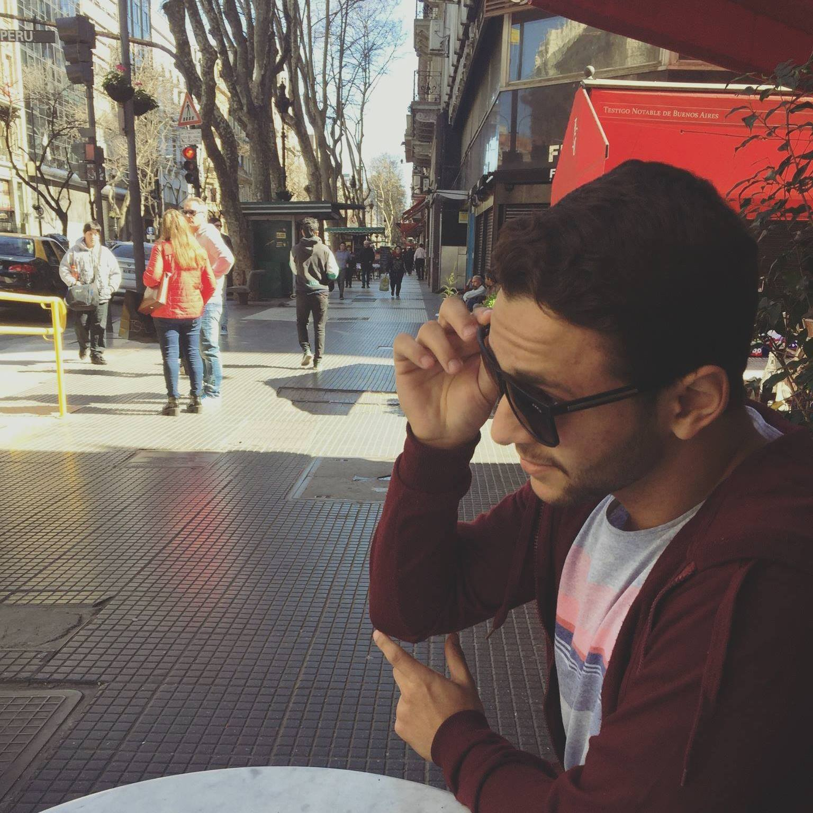

Graduated in BSc. in Science and Technology and Undergraduate BSc. in Information Engineering,
both at the Federal University of ABC (UFABC), in Santo André, Brazil. I have experience in
undergraduate research in areas of Telecommunications, Digital Signal Processing and Machine
Learning. Also member of Signals and Systems Laboratory.
Some projets are:
Low-cost Multi channel system for audio signal acquisition:
Project aimed to develop a system capable of acquiring audio signals. The project is a hardware
with 4 built-in mics. Its application is commonly used to direction of arrival estimation and
Machine Learning.
Management System for Inclusive Monitoring tasks:
Web application development built on top ReactJS, NodeJs and Firebase to help in demand and
tasks of Monitoring functionalities such as Access Profile, PwD’s information and assignments
designation.
Patient Management System to Emergency Care Unit:
In this project it was developed a web-based system to Emergency Care Unit collaborators,
functionalities as digitalization of medical records, account profiles of patients and screening done
on the computer.
Hospital equipment Maintenance System:
Hospital equipment management system aimed at requesting equipment maintenance, equipment
cataloging and equipment prevention.